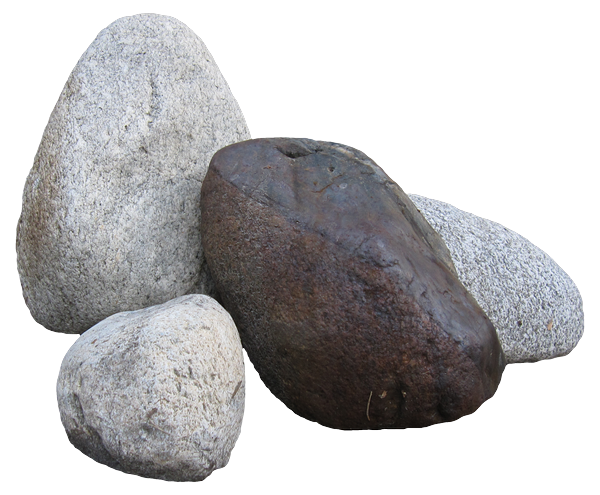
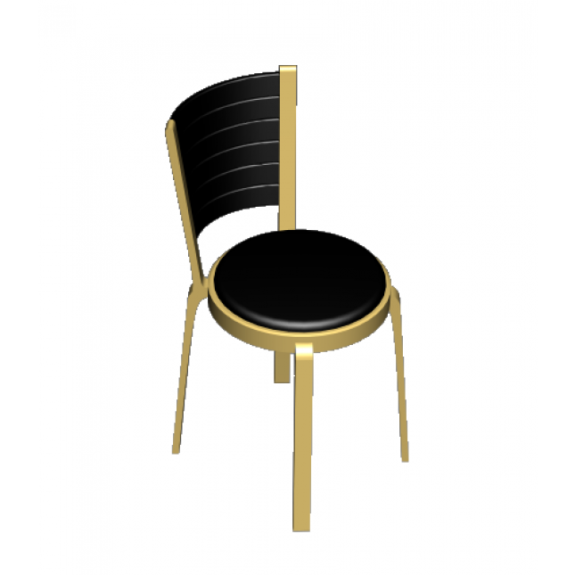
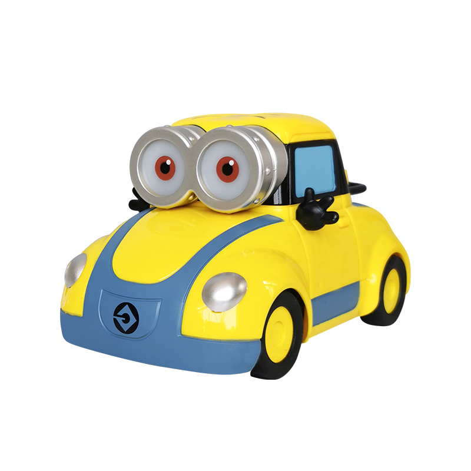
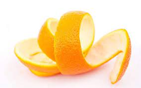

-
lipstick
Trash
Lipstick, whether expired or not, belongs to Trash, because even if the lipstick is not expired, it still contains a certain amount of heavy metal substances or chemical components
-

Stone
RecycleRecyclable garbage is garbage that can be recycled.
-
Egg
OrganicLeftovers, expired food, melon rinds and kernels, flowers and green plants, Chinese medicine residues and other perishable biomass household waste.
-

Chair
Recycle
Recyclable garbage is garbage that can be recycled.
-

Toy car
Recycle
Recyclable garbage is garbage that can be recycled.
-

Orange peel
OrganicLeftovers, expired food, melon rinds and kernels, flowers and green plants, Chinese medicine residues and other perishable biomass household waste.